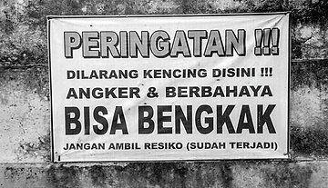
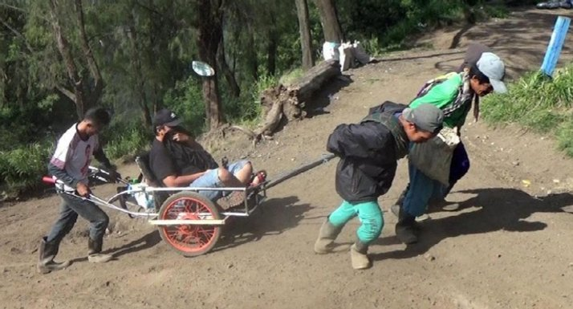
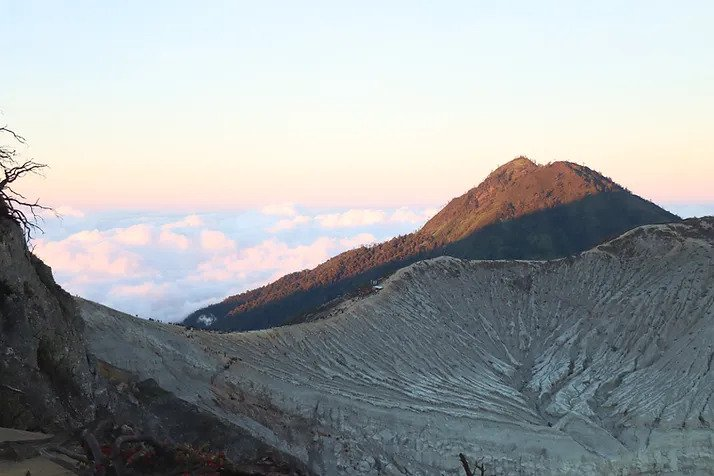
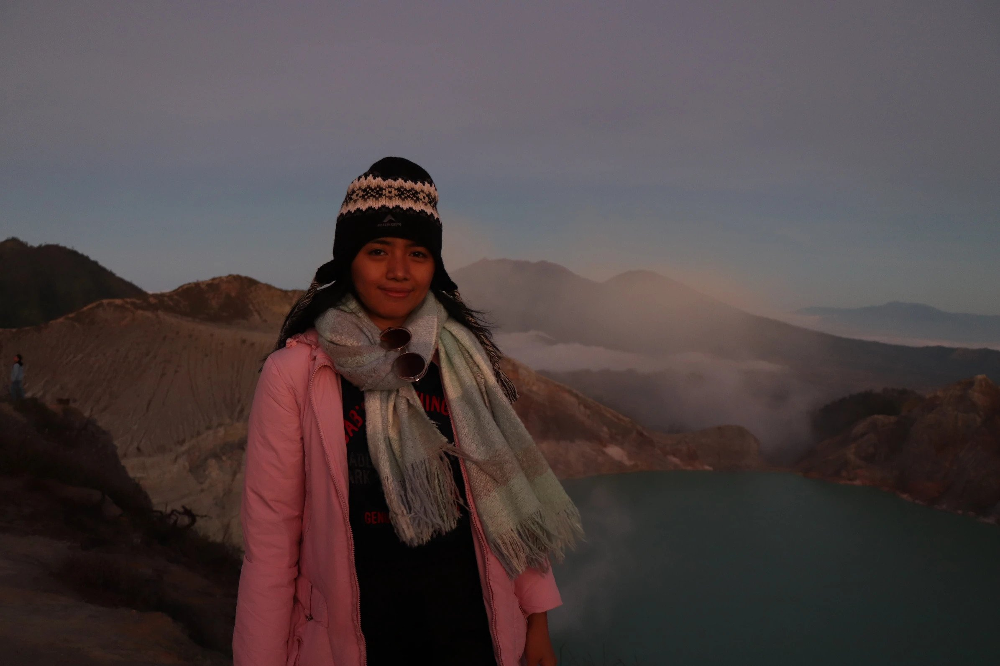

First week in Canada, mild winter.

Siang itu, aku dan si abang sedang dalam perjalanan ke Pulau Merah, ketika di tengah perjalanan, kami bertemu dua pemuda yang secara kebetulan sedang makan siang di kedai dimana kami singgah. Ditemani semangkok mie ayam bakso dan segelas jus buah naga andalan Banyuwangi, kami mengobrol ringan dengan dua pemuda itu. Ternyata mereka merupakan traveller dari Bali yang juga sedang dalam perjalanan ke Pulau Merah. Mereka baru saja kembali dari pendakian ke gunung Ijen.
"Bagaimana kalau kita ke Gunung Ijen malam ini?" - ide itu terlontar begitu saja dari si abang.
Memang sudah sejak beberapa bulan lalu kami berencana untuk mendaki Gunung Ijen. Gunung Ijen adalah sebuah gunung berapi yang terletak di perbatasan antara Kabupaten Banyuwangi dan Kabupaten Bondowoso, Jawa Timur, Indonesia. Dari cerita yang kami dengar, itu adalah a must to do kalau sedang berlibur di Banyuwangi.
Setelah bergalau-ria, menimbang plus-minus rencana itu, akhirnya kami benar-benar memutuskan untuk berangkat. Perjalanan ini bisa dibilang cukup nekat, karena sangat minim persiapan. Bahkan siang itu, tanpa sengaja sepatu sport satu-satunya yang kubawa ke Banyuwangi basah terkena ombak di Pantai Merah. Akibatnya, sore itu sepulang dari Pantai Merah, waktu dihabiskan untuk membongkar koper, mencari pakaian yang sekiranya dapat dikenakan ke Ijen. Sebuah sepatu kets yang notabene bukan sepatu olahraga (dengan sol yang sangat tipis), sebuah winter coat dan syal yang untungnya aku bawa ke Indonesia, plus sebuah kaos dan celana training yang kupinjam dari si abang. Situasi si abang lebih kacau sebab dia hanya punya sepatu, no sport clothes, no syal, kupluk, dan teman-temannya 😤️. Beberapa jam sebelum berangkat, (terpaksa) aku temani doi berkeliling untuk membeli sebuah jaket, celana gunung, dan topi untuk dipakai ke pendakian.
All done. Tidak banyak yang kami bawa. Hanya sebuah ransel gunung yang di dalamnya berisi air minum, minyak kayu putih, tisu, selimut, kamera, dan obat batuk - kebetulan aku sedang sakit pada saat itu. Dalam perjalanan, kusempatkan membeli sepotong roti dan kopi instan untuk bekal.
Sekitar pukul 22.00 kami pun berangkat. Berdasarkan estimasi Mbah Google Maps, waktu tempuh sampai di area Ijen dengan menggunakan sepeda motor kurang lebih sekitar satu jam. Dari informasi yang kami peroleh, pendakian dimulai sekitar pukul 01.00 dini hari.
Dari kota Banyuwangi, kami menuju kecamatan Glagah. Sedikit drama mewarnai perjalanan malam itu. Memasuki Kecamatan Glagah, kami baru menyadari bahwa persediaan bensin motor kami sudah sedikit. memang pada hari itu, kami hanya mengisi bensin satu kali saat akan berangkat ke Pulau Merah. Sejak siang tadi, saat bertolak dari Pulau Merah, entah sudah berapa kali aku mengingatkan si abang untuk mengisi tangki motor - namun tak dihiraukan. 😤️
Sialnya, SPBU di Glagah sudah tutup karena saat itu telah lewat pukul 22.00 - dan itu adalah SPBU terakhir di jalur perjalanan kami, menurut bapak-bapak yang kami temui di sekitar situ. Akhirnya kami terpaksa putar balik masuk kota Banyuwangi untuk mencari SPBU terdekat - dan lagi-lagi, tutup! Kultengok jam di handphone. Karena sudah sangat terlambat dari itinerary kami, akhirnya kami memutuskan putar arah lagi dan melanjutkan perjalanan. Keberuntungan masih menyertai kami saat akhirnya kami bertemu penjual bensin eceran di tengah perjalanan ğŸ˜ï¸.
Sepanjang perjalanan, hatiku dipenuhi perasaan cemas dan takut. Kami benar-benar tidak memiliki bayangan akan seperti apa medan yang kami tempuh hingga ke kawasan Ijen. Karena semua serba dadakan, aku jadi tak sempat bertanya ke Mbah Google. Apalagi, penerangan jalan sangat terbatas, benar-benar hanya dari lampu motor kami. Bagaimana kalau tiba-tiba ada begal? Atau motor kami tergelincir? Pikiran itu tak hentinya bergelayutan di kepalaku. Belum lagi sakit pantat yang menyiksa sepanjang perjalanan karena jalanan yang terus menanjak. Rintik hujan yang turun malam itu menjadi pelengkap suasana ke-horror-an perjalanan kami.
Di tengah perjalanan, kami dihentikan oleh sekelompok orang. Kupikir begal, ternyata bukan 😂... Mereka adalah petugas pos jaga dari aparat desa setempat. Semua calon pengunjung kawasan Ijen wajib untuk membayar karcis masuk sebesar Rp.10.000/orang. Tak lupa beliau mengingatkan kami agar berhati-hati, khususnya besok pagi saat turun. Sebaiknya mesin motor tidak dimatikan karena berbahaya, bisa-bisa tergelincir karena jalanan cukup terjal.

Mungkin waktu sudah menunjukkan sekitar pukul 23.30 (aku tidak ingat pasti) ketika kami tiba di kawasan Gunung Ijen. Disana sudah banyak orang yang nampaknya juga akan mendaki Ijen malam itu. Aku sedikit terhenyak, sebab tak kusangka akan seramai itu. Banyak yang datang bersama rombongan, namun tak sedikit pula yang datang dengan mengendarai sepeda motor seperti kami. Seseorang mengarahkan kami ke tempat parkir motor.
Pintu gerbang utama ke Cagar Alam Taman Wisata Kawah Ijen terletak di Paltuding, yang juga merupakan Pos PHPA (Perlindungan Hutan dan Pelestarian Alam). Terdapat banyak pondok wisata dan warung yang menjual keperluan pendakian untuk menyaksikan keindahan kawah Ijen. Ada satu dua warung kopi disana, ditambah banyaknya pedagang kaki lima yang menjajakan jualannya. Bahkan ada juga tukang cilok - amazing! Ternyata banyak yang suka ngemil cilok tengah malam di tengah hutan - apaansih@garing.com 🙄️
Sambil menunggu jadwal pendakian, kami mencari tempat yang sekiranya bisa untuk istirahat. Di dekat tempat parkir, terdapat sebuah bangunan kecil dengan teras yang cukup luas. Beberapa orang sudah ada disana. Ada yang asyik bercengkrama, ada pula yang sekedar mencari kehangatan di balik sarungnya. Cuaca malam itu memang cukup dingin. Aku sempat khawatir kalau akan turun hujan ketika dalam pendakian. Belum lagi batukku yang tak kunjung berhenti, malah semakin parah karena dinginnya suhu disana. Tapi kupejamkan juga mataku. Aku tahu benar kondisi fisikku yang tidak kuat begadang. Meski sebenarnya sore tadi pun sudah kusempatkan untuk tidur sebentar.
Sekitar pukul 01.00, jalur pendakian dibuka. Sebelumnya, kami membeli tiket terlebih dahulu, seharga Rp.7500/orang. Sangat murah bukan? Selama pendakian, kami ikut salah satu rombongan - entah rombongan siapa, kami ngekor saja berhubung kami lupa membawa senter. 😂️
Gunung Ijen memiliki ketinggian 2.386 mdpl. Namun medan pendakian sudah cukup bagus dan sangat accessible, meski tidak bisa dikatakan mudah. Jalanan cukup lebar dan tidak berbatu dan cukup bersahabat untuk pendaki pemula. Dari Paltuding, kita harus berjalan kaki dengan jarak sekitar 3 km. Lintasan awal sejauh 2 km cukup berat karena jalur yang menanjak, dimana sebagian besar jalurnya memiliki kemiringan 25-35 derajat. Selain menanjak, struktur tanahnya juga berpasir sehingga menambah berat langkah kaki karena harus menahan berat badan agar tidak merosot ke belakang. Namun dengan adanya ratusan bahkan ribuan orang yang mendaki setiap harinya, semua itu tidak terlalu terasa.
Pendakian biasanya memakan waktu kurang lebih 2-3 jam tergantung kecepatan masing-masing - kami butuh kurang lebih 3,5 jam. Perjalanan malam itu menyenangkan, namun cukup melelahkan dan terasa begitu panjang. Batukku menyerang hampir setiap 3 langkah kaki. Belum lagi di tengah perjalanan malah beberapa kali kebelet kencing. Saking banyaknya pendaki, hampir semua tempat terjangkau oleh mata-mata (sangat menyiksa untuk para wanita jika harus menahan kencing berjam-jam). Jadi sangat tidak memungkinkan untuk buang air kecil di semak-semak, meski akhirnya kulakukan juga daripada ngompol di celana. ğŸ˜ï¸
Setelah beristirahat di pos, jalur selanjutnya naikan agak curam dan cukup licin, yang lalu dilanjutkan dengan berjalan sejauh 1 km yang relatif landai. Di titik ini kita dapat menyaksikan pemandangan deretan pegunungan yang sangat indah. Mendekati puncak Gunung Ijen, hembusan angin menjadi semakin kencang. Tadinya memang tidak terasa dingin sama sekali karena keringat terus menetes. Oh ya, sebenarnya sepanjang perjalanan ke puncak, ada beberapa penduduk lokal yang menawarkan jasa antar. Mereka menyebutnya "taxi ijen". Kalau tidak salah, tarifnya sekitar 150-200 ribu tergantung jarak tempuh. Menurutku, taxi ini cukup pricey namun juga sangat unik dan helpful. Mereka adalah penyelamat para pendaki yang kelelahan. Dengan adanya taxi ini, para pendaki yang tidak mampu melanjutkan pendakian masih tetap bisa mencapai puncak Ijen.
Sekitar pukul 03.30 dini hari, kami tiba di puncak Ijen. Banyak pendaki yang sudah sampai. "Lha, blue firenya mana" aku celingukan mencari keberadaan si api biru. Karena kebingungan, kami memutuskan untuk meruskan perjalanan, mengikuti orang-orang, tanpa tahu kemana sebenarnya mereka sedang menuju. Ternyata untuk dapat menyaksikan kobaran si api biru, kita harus menuruni kawah. Dari bisik-bisik orang sekitar, kita masih harus berjalan cukup jauh untuk mencapai keberadaan blue fire. Bahkan sayup-sayup kudengar satu dua orang yang mengurungkan diri sebab tidak berani jika harus kecapaian di tengah kawah - kali ini tidak ada taksi kawah.
Sejenak aku merasa ragu, mengingat kondisi fisikku yang sudah sangat lelah letih. Belum lagi batukku yang hilang muncul terus. Tapi karena sudah kepalang tanggung, dan karena memang tujuan kami adalah menyaksikan kobaran si api biru, akhirnya kami putuskan untuk turun ke kawah Ijen. Untuk turun menuju ke kawah harus melintasi medan berbatu-batu sejauh 800 meter dengan kondisi yang terjal hingga kemiringan 45 derajat. Selain itu, kita disarankan untuk menggunakan masker anti asap belerang. Sangat banyak orang yang menawarkan masker kepada para pendaki. Saat itu aku sedikit menyesali ketidaksiapan kami untuk melaksanakan Ijen trip ini. Bayangkan, biaya sewa masker cukup mahal, yakni 25 ribu/masker (jadi akan lebih efisien jika membeli, harganya antara 50-75 ribu di website). Belum lagi masker yang ditawarkan sudah sangat kotor dan berbau. Entah berapa ribu orang yang sudah menggunakannya. Benar-benar tidak higenis. Jadi sangat aku sarankan bagi kawan-kawan pembaca yang hendak mendaki Ijen agar menyiapkan masker khusus ini sebelumnya.
Kawah Ijen adalah sebuah danau kawah yang bersifat asam yang berada di puncak Gunung Ijen dengan kedalaman danau 200 meter dan luas kawah mencapai 5.466 Hektar. Danau kawah Ijen dikenal merupakan danau air asam kuat terbesar di dunia. Fenomena eternal blue fire atau api biru abadi berada di dalam kawah Ijen, dan pemandangan alami ini hanya terjadi di dua tempat di dunia yaitu Islandia dan Ijen. Blue fire hanya dapat dilihat oleh mata manusia saat tidak ada cahaya, karenanya waktu ideal untuk melihatnya adalah jam 2 hingga jam 4 dinihari (sumber : wikipedia). Di samping itu, tidak disarankan pula mengunjungi Ijen saat musim penghujan. Selain nyalanya lebih terang saat musim kemarau, namun juga cukup rawan karena Kawah Ijen kerap kali mengeluarkan gas beracun saat musim penghujan.
Dan disanalah si api biru berkobar (meski kobarannya saat itu sangat kecil seperti api kompor 🙄️). Fenomena blue fire menjadi spesial dan diburu banyak orang. Lelah perjalanan berselimutkan hawa dingin terbayar sudah saat blue fire yang dinantikan terlihat. Orang-orang sibuk mengambil gambar dan video dengan berbagai gaya. Kuakui memang ada perasaan yang tak bisa diungkapkan saat menyaksikan blue fire Ijen. Sungguh keajaiban Tuhan yang maha dahsyat! Berdasarkan informasi yang kubaca, fenomena blue fire di kawah Ijen ini terjadi karena kawah memiliki kandungan belerang yang begitu besar. Saat belerang bertemu dengan panas bumi bertekanan tinggi, terjadilah reaksi oksidasi. Reaksi pembakaran belerang inilah yang menghasilkan panas dan cahaya, yang diterima sebagai warna biru oleh reseptor mata kita.
Puas menyaksikan blue fire, kami beranjak kembali ke atas kawah. Perjalanan kali ini jauh lebih sulit. Meski tidak jauh, namun medan yang sangat berbatu dan berpasir, ditambah keterjalannya membuat nafas kami naik turun. Inilah mengapa kita sangat dianjurkan untuk mengenakan sepatu gunung saat pendakian, sebab jika tidak, bersiap-siaplah untuk menahan sakit karena bebatuan atau tergelincir karena pasir.
Tidak adanya one way system menambah sulit pendakian. Bayangkan saja, ada ratusan orang yang naik dan ada ratusan orang yang turun. Jadi kita harus bersabar untuk dapat melintasi jalan secara bergantian. Disini dibutuhkan kehati-hatian untuk mengambil pijakan yang benar. Jika tidak, bisa terpeleset. Selama perjalanan, beberapa pengais rejeki di tambang belerang juga lalu lalang. Sangat mengagumkan melihat mereka dengan entengnya menaiki curamnya kawah sambil memikul bakul yang penuh dengan belerang.
Mentari di ufuk timur sudah hampir tampak saat kami tiba di puncak kawah. Tujuan selanjutnya adalah mengejar sunrise. Dari puncak kawah, kami masih harus berjalan sekitar 1 km ke arah timur agar dapat menyaksikan matahari terbit. Cukup melelahkan juga. Namun keindahan mentari terbit di ufuk Ijen lebih memikat dibandingkan dengan memikirkan lelahnya perjalanan. And voilà , here is the sunrise for you! Selamat pagi...
Pemandangan Ijen sangat indah menjelang pagi. Warna langit yang kemerahan, gunung-gunung coklat tanah dan pegunungan di seberang sana yang kebiruan, dan pemandangan danah kawah yang tampak hijau toska sangat menyejukkan mata. Rasanya ingin berlama-lama disana. Beberapa kali sempat tercium bau asap belerang yang terbawa angin, jadi tetap harus berhati-hati juga.
Memasuki pukul 6 pagi hari, warna-warna semakin terlihat. Orang-orang sibuk berfoto. Ada yang mendekati batas tebing, ada yang naik ke pohon, ada pula yang bergaya dengan membawa bendera kebanggaannya. Setiap orang menikmati indahnya Ijen dengan caranya sendiri. Aku pun tak hentinya berdecak kagum melihat keindahan pemandangan di sekililingku. Lelah perjalanan, semalaman tak tidur, benar-benar terlupakan saat itu. Beberapa di antara keindahan itu sempat kuabadikan juga dalam foto.
Bentang alam terlihat jelas. Danau biru berpayung langit jingga kemerahan, dengan hamparan bebatuan berhiaskan ranting kering. Sungguh menyejukkan mata siapapun yang memandangnya. Berada di atas awan, menyaksikan karya Tuhan yang maha indah ini, menyadarkanku akan beruntungnya diriku terlahir dari Ibu pertiwi Indonesia.
Puas menikmati keindahan mentari di puncak Ijen, kami beranjak untuk turun kembali. Perjalanan turun tentu jauh lebih mudah. Diterangi mentari yang mulai meninggi, kita bisa menyaksikan pemandangan alam di sekitar pegunungan Ijen. Perjalanan menuruni Ijen terasa begitu menyenangkan.
Di pertengahan jalan telah disediakan rest area untuk para pendaki yang ingin beristirahat sejenak melepas lelah. Di tempat peristirahatan ini, tersedia warung kecil yang menjual makana ringan seperti mie instan seduh dan teh hangat. Juga tersedia toilet umum. Namun tarif toilet umum lumayan menguras kantong, yakni 5 ribu rupiah untuk sekali pakai 😱️. Persediaan air di toilet juga terbatas. Wajar saja, nampaknya air ditransfer secara manual, sebab mengalirkan air ke puncak bukit tidak memungkinkan. Kalau kita kurang beruntung, mungkin kita tidak kebagian air saat menggunakan toilet. Jadi, sangat disarankan untuk membawa sebotol air lebih dan tisu basah, terutama untuk yang perempuan. Saat itu, karena sudah kebelet, dengan terpaksa kusewa juga toilet itu, dan alamakkk baunya sampai ke ubun-ubun, karena sudah dipakai oleh entah berapa orang, tanpa disiram.
Di sekitar rest area ini juga terdapat beberapa pengrajin yang menjajakan berbagai macam kerajian dari belerang. "DIlihat-lihat dulu Mba, souvenirnya", kata mereka sembari menawarkan jualannya pada para pendaki. Motifnya cukup unik dan lucu. Aku tidak tahu persis harganya, menurut si Mbah google sih sekitar 10-30 ribu. Cukup terjangkau, lumayan untuk kenang-kenangan. Sebenarnya aku ingin membeli sebuah, untuk menambah koleksi printilan souvenirku, tapi big no no kata si abang. 😒️
Sekitar pukul 8 pagi, kami sudah tiba di paltuding. Rasa lapar mendadak menyerang, melihat banyaknya abang-abang tukang bakso yang berjualan. Namun kami memutuskan untuk langsung kembali ke kota, agar tidak kesiangan.
Perjalanan menuruni pegunungan Ijen terasa lebih challenging. Medan yang kami lewati ternyata cukup ekstrim. Jalanan yang menukik turun, agak curam dan licin sangat rawan menyebabkan kecelakaan. Ditambah jurang di sisi kanan dan kiri jalan. Hal ini tidak kami sadari semalam, karena kondisi jalan yang gelap. Dalam perjalanan pulang, kita memang harus ekstra hati-hati. Apalagi jika menggunakan kendaraan matic, dengan sistem pengereman yang gampang panas. Ditambah dengan kondisi pengendara yang mungkin kelelahan setelah begadang semalaman, pasca pendakian yang menguras kekuatan fisik. Jika memang mengantuk, ada baiknya berhenti sejenak, barang 10-15 menit untuk memulihkan konsentrasi, sehingga perjalanan panjang yang menyenangkan tidak malah berakhir petaka.
Demikianlah cerita perjalanan kami mendaki Ijen. Perjalanan kali ini mengingatkanku untuk kembali menghargai arti kehidupan, untuk senantiasa bersyukur atas kesehatan, atas kekuatan yang masih ada bersamaku saat ini. Mengingatkanku pada karunia Tuhan Yang Maha Kuasa, yang dengan segala kemurahan hati-Nya memberiku kemampuan untuk bisa melihat dan menikmati keindahan ciptaan-Nya.

First week in Canada, mild winter.

Perjalanan studi ke Lyon.

Seklumit cerita tentang menjadi dosen muda.
Based in Bali, Indonesia. Feel free to contact me on this address